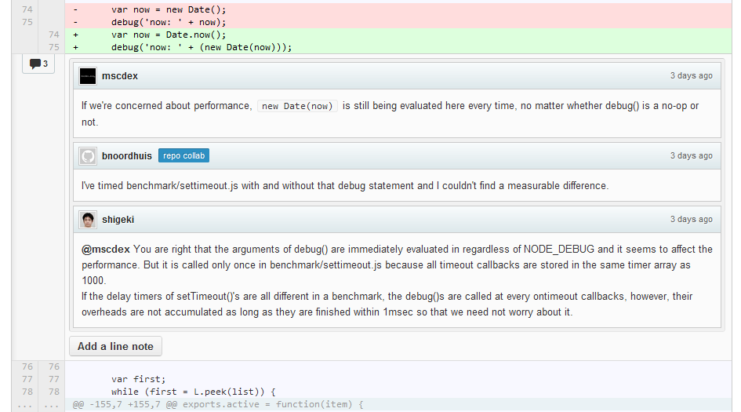
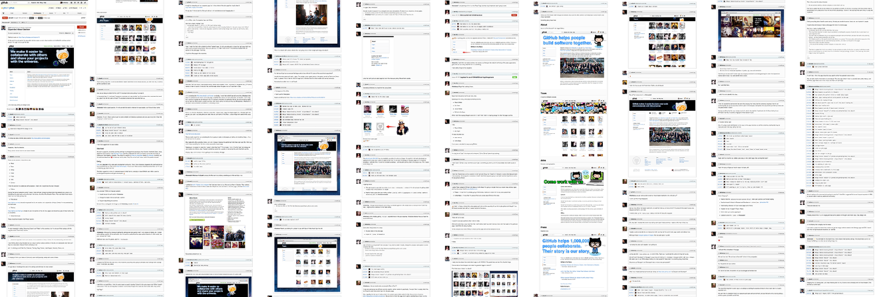
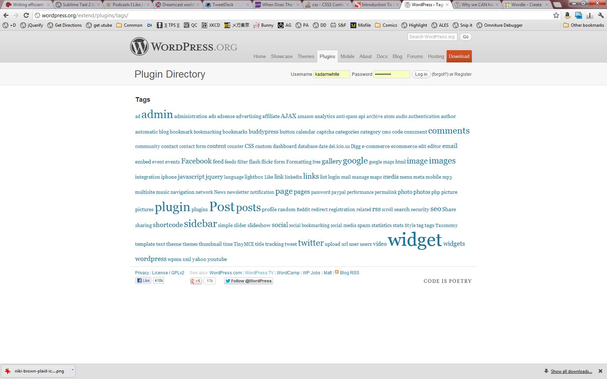

How WE Can Have Nice Things: The Future of Front-End Dev Tools
(and what it means to WordPress developers)
Delivered at WordCamp Boston 2012
K.Adam White • @kadamwhite
Where we are now
It is 2012, and our Things are pretty darn Nice
What is Front-End Development?
A Baseline for Front-End Developers
- Blog post by Rebecca Murphey
HTML, CSS • jQuery • JavaScript • CSS preprocessors (SASS, LESS) • Client-side templating (Mustache) • Source Control (Github) • Modularity, dependency management, and production builds • In-Browser Developer Tools • The command line • Testing • Process automation • Code quality • Documentation
The Good news is, developers are Lazy
If our job gets more complex, we will spent months (or years) creating tools to make it easier again
- CSS3 is Awesome
- WCBOS 2011: Boaz Sender, Exploding Your WordPress Theme with CSS3 (video)
- Tomorrow, 2pm: George Stephanis, Updating “Kubrick” to CSS3/HTML5
- CSS3 doesn't change the structure of CSS
Stylesheet Pre-Processors
were created to help manage stylesheets
SASS
- “Syntactically Awesome StyleSheets”
- Born from Haml, and written in Ruby
- Stricter syntax than CSS:
$blue: #3bbfce
.content-navigation
border-color: $blue
color: darken($blue, 9%)
LESS
- “Meta-language”: CSS is valid LESS by default
- Originally in Ruby, now uses JavaScript: can run in the browser or on the command line with Node
- LESS Homepage
- LESS on Github
@blue: #3bbfce;
.content-navigation {
border-color: @blue;
color: darken(@blue, 9%);
}
SCSS
- “Sassy CSS” (SCSS) syntax introduced in v3 to make syntax a meta-set of CSS
- Sass Homepage
- Sass on Github
$blue: #3bbfce;
.content-navigation {
border-color: $blue;
color: darken($blue, 9%);
}
Stylus
- Colons, semi-colons, brackets? All optional
- Also uses Node.js
- Stylus syntax comparison
- Stylus Homepage
- Stylus on Github
blue = #3bbfce
.content-navigation
border-color blue
color darken(blue, 30%)
I happen to use LESS
(YMMV)
Nested Rules
.widget {
span {
color: #14ff23;
font-style: italic;
}
a {
text-decoration: none;
&:hover {
text-decoration: underline;
}
}
}“&” lets you reference the current selector:
The &:hover above means .widget a:hover
Math!
Inline arithmetic within definitions
@text-size: 16px;
h1 {
font-size: @text-size * 2;
}
Rendered CSS:
h1 {
font-size: 32px;
}
“Mixins” (functions)
This...
.rounded-corners (@radius: 5px) {
-webkit-border-radius: @radius;
-moz-border-radius: @radius;
border-radius: @radius;
}
#header {
.rounded-corners;
}
#footer {
.rounded-corners(10px);
}
...compiles to this:
#header {
border-radius: 5px;
-webkit-border-radius: 5px;
-moz-border-radius: 5px;
}
#footer {
border-radius: 10px;
-webkit-border-radius: 10px;
-moz-border-radius: 10px;
}
@extend (SCSS only at present)
Lets you intelligently specify rule inheritance, with less code than mixins
.widget {
background-color: #444;
color: #00ff00;
font-family: monospace;
}
.error-widget {
@extend .widget
color: #ff0000;
}.widget,
.error-widget {
background-color: #444;
color: #00ff00;
font-family: monospace;
}
.error-widget {
color: #ff0000;
}(Note: If you want this in LESS—and I for one do—add a +1 to the feature pull request on github)
SASS/LESS: Friends & Family
SCSS: Compass framework • Bourbon mixin library
LESS:
Twitter Bootstrap toolkit
lessphp PHP port of LESS—introduces ways to integrate with WordPress
wp-less by Thomas Parisot (@CyneticMonkey)
Integrating LESSphp into WordPress (in French) by Baptiste Caquot (@baptwit)
dotless .NET port of LESS, used in SquishIt (by @JustinEtheredge)
So that's one Cool Thing
- Pre-processors let you make Even Cooler Things
- Front end has a build process, and it ain't “reload!”
- Pre-processed
- Minified
- Concatenated
- Inspected, detected, infected, neglected and selected

Putting tools to use
- Make pre-processors a part of your workflow:
- Command-line, via Ruby or Node.js
- Manually, via dedicated applications
- Built-in to your text editor
- Server-side via ports to PHP, .NET, etc
- Browser-side via JavaScript (LESS only)
- Pick and choose—the best tools are flexible!
Want More?

Git
WordPress uses SVN, but on the front-end
Github has won. Resistence is futile.
Learn the ropes with Try Git on CodeSchool
Github has released Mac and Windows clients; other non-Github-specific GUIs exist
Even non-Git-based projects frequently have Github mirrors—Mark Jacquith established the official WordPress Github mirror
Github is the JavaScript Community's Home
Code Review Tools
Forking/Pull Requests
Github article on how they use Pull Requests for internal development
Public Bug Tracker
Wiki
Gists (for short code/one-off demos)
README.md
Community Concerns
- “What is this thing?”: Documentation
- Code comments
- API Reference
- Getting started tutorials/examples
- “Tabs vs Spaces”: Style Guides FTW
- “Did I break it?”: Unit Tests
- Most importantly, be excited about what you create: dream big, involve the rest of us
A parting thought
Thank You
Slides: bit.ly/kadam-wcbos12
adam@kadamwhite.com
Slides created with Reveal.js
Typefaces by The League of Movable Type
Continue right for Unit Testing and Style Guide resources →
Resources
Style Guides
…the more readable our source code is, the easier it is to maintain.
- Addy Osmani, JavaScript Style Guides and Beautifiers
- Idiomatic.js: A useful (if opinionated) community-maintained style guide
- jQuery Core style guide
- Github's (S)CSS Style Guide
- WordPress Core coding standards for PHP and CSS (Draft)
Unit Testing
- An article from Ben Cherry on how to write your code in a testable way
- Recommended testing libraries, from Idiomatic.js
- QUnit framework website, with demos and a “cookbook”
- Smashing Magazine Tutorial on unit testing, helping explain what a “unit” is
- A Chapter of Addy Osmani's Backbone Fundamentals about unit testing Backbone.js applications